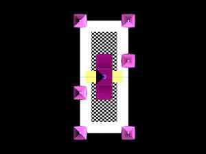

|
| |


|

| |


|


| |
|
LocationSomewhere in close proximity of public transport stands a 250 meter high rising office with a unmistakable clear name: "Tulips from Holland".Nobody won't forget where you're housed. Shape
The mainshape are three tulips, one red, one yellow and one purple.
The stems that lead upward to the flowerleaves are blue and white blocked in
in a hourglass patern. A patern which originates from the dutch farmers,
who used that motif for their wooden window shutters. Atria
In the open space between the stems atriums
are hung which span ten stories and hence have height of 30 meters and an
open window of 20 meters wide.
Each atrium should have a different theme like dessertsnake, crocodilemarsh, sharkbay.
The elevators are connected to two columns, each at a third of the atriumwindow.
Free hanging three meter wide alleys left and right lead to the officefloors.
A Steel Frame
The stems are made up of a outside steelframe, which carries the
loads, the officefloors, which are hung in the middle
and a colored glass facade, which
covers the building.
EntranceThe entrance to the building is through a high gate. It opens to the lowest atrium. Rollstairs feed the stream of people to five different floors from which six five-floor-high elevators heave them up into the higher floors, like a train in stops of five floors.Underneath the building and the atrium is a parking. Daylight enters the parking through the fountains glass bottom. Levels of Luxery and EcologyA double facade which leaves the possibility for semi-natural and individual ventilation (after the Eco Tower of Commerce Bank in Frankfurt). A decorated ceramicfloor with changing designs and of course the hanging gardens in the atrium.DecorationsBesides the raw outlines of the building as in this photo's the actual facades of the towers and walls will be individually designed and modified.PhilosophyWhat makes a building durable?What makes a building unique? Well, all old buildings in towns, which still draw crowds, were once build for rich people, that wanted to show off how well they were doing. And to show off their increadible richness they didn't order the cheapest building with the least decorations. No, they ordered lavish decorations and refined shapes. No cost nor effort was saved to make something remarkable. Every square millimeter of the outer and inner surface was used to express their state in the society or their view. And so if you look back and ask whether it was durable, you can answer: Yes, the art and decorations made it so. Most modern day achitecture is a waste of space and money, because a lack of effort in the design and decorations simply doesn't produce the added value to stand the tooth of time. | ||